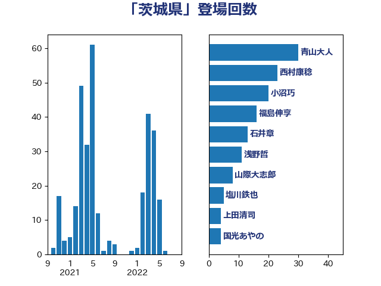

単語「茨城県」

| 青山大人 | 立憲民主党 | 30 回 |
| 西村康稔 | 自由民主党 | 23 回 |
| 小沼巧 | 立憲民主党 | 20 回 |
| 福島伸享 | 無所属 | 16 回 |
| 石井章 | 日本維新の会 | 13 回 |
| 浅野哲 | 国民民主党 | 11 回 |
| 山際大志郎 | 自由民主党 | 8 回 |
| 塩川鉄也 | 日本共産党 | 5 回 |
| 上田清司 | 国民民主党 | 4 回 |
| 国光あやの | 自由民主党 | 4 回 |
| 堀内詔子 | 自由民主党 | 4 回 |
| 青木愛 | 立憲民主党 | 4 回 |
| 山添拓 | 日本共産党 | 3 回 |
| 平木大作 | 公明党 | 3 回 |
| 石川昭政 | 自由民主党 | 3 回 |
| 笠井亮 | 日本共産党 | 3 回 |
| 葉梨康弘 | 自由民主党 | 3 回 |
| 須藤元気 | 無所属 | 3 回 |
| 吉良州司 | 無所属 | 2 回 |
| 末松信介 | 自由民主党 | 2 回 |
| 梶山弘志 | 自由民主党 | 2 回 |
| 玉木雄一郎 | 国民民主党 | 2 回 |
| 田村智子 | 日本共産党 | 2 回 |
| 田村貴昭 | 日本共産党 | 2 回 |
| 福田昭夫 | 立憲民主党 | 2 回 |
| 赤羽一嘉 | 公明党 | 2 回 |
| 上月良祐 | 自由民主党 | 1 回 |
| 上野通子 | 自由民主党 | 1 回 |
| 下野六太 | 公明党 | 1 回 |
| 丸川珠代 | 自由民主党 | 1 回 |
| 井上信治 | 自由民主党 | 1 回 |
| 加藤勝信 | 自由民主党 | 1 回 |
| 吉川赳 | 無所属 | 1 回 |
| 吉田久美子 | 公明党 | 1 回 |
| 太田房江 | 自由民主党 | 1 回 |
| 宗清皇一 | 自由民主党 | 1 回 |
| 小宮山泰子 | 立憲民主党 | 1 回 |
| 小熊慎司 | 立憲民主党 | 1 回 |
| 山下雄平 | 自由民主党 | 1 回 |
| 山口那津男 | 公明党 | 1 回 |
| 山崎誠 | 立憲民主党 | 1 回 |
| 山田太郎 | 自由民主党 | 1 回 |
| 岡本あき子 | 立憲民主党 | 1 回 |
| 岩本剛人 | 自由民主党 | 1 回 |
| 岸真紀子 | 立憲民主党 | 1 回 |
| 早坂敦 | 日本維新の会 | 1 回 |
| 杉久武 | 公明党 | 1 回 |
| 枝野幸男 | 立憲民主党 | 1 回 |
| 柳ヶ瀬裕文 | 日本維新の会 | 1 回 |
| 横山信一 | 公明党 | 1 回 |
| 櫛渕万里 | れいわ新選組 | 1 回 |
| 櫻田義孝 | 自由民主党 | 1 回 |
| 武部新 | 自由民主党 | 1 回 |
| 浅田均 | 日本維新の会 | 1 回 |
| 熊谷裕人 | 立憲民主党 | 1 回 |
| 玄葉光一郎 | 立憲民主党 | 1 回 |
| 田名部匡代 | 立憲民主党 | 1 回 |
| 石井苗子 | 日本維新の会 | 1 回 |
| 石垣のりこ | 立憲民主党 | 1 回 |
| 石川香織 | 立憲民主党 | 1 回 |
| 磯崎仁彦 | 自由民主党 | 1 回 |
| 神谷裕 | 立憲民主党 | 1 回 |
| 福田達夫 | 自由民主党 | 1 回 |
| 竹内真二 | 公明党 | 1 回 |
| 自見はなこ | 自由民主党 | 1 回 |
| 藤岡隆雄 | 立憲民主党 | 1 回 |
| 藤木眞也 | 自由民主党 | 1 回 |
| 西野太亮 | 自由民主党 | 1 回 |
| 足立敏之 | 自由民主党 | 1 回 |
| 近藤和也 | 立憲民主党 | 1 回 |
| 野上浩太郎 | 自由民主党 | 1 回 |
| 阿部弘樹 | 日本維新の会 | 1 回 |
| 音喜多駿 | 日本維新の会 | 1 回 |
| 高木かおり | 日本維新の会 | 1 回 |
| 高橋千鶴子 | 日本共産党 | 1 回 |